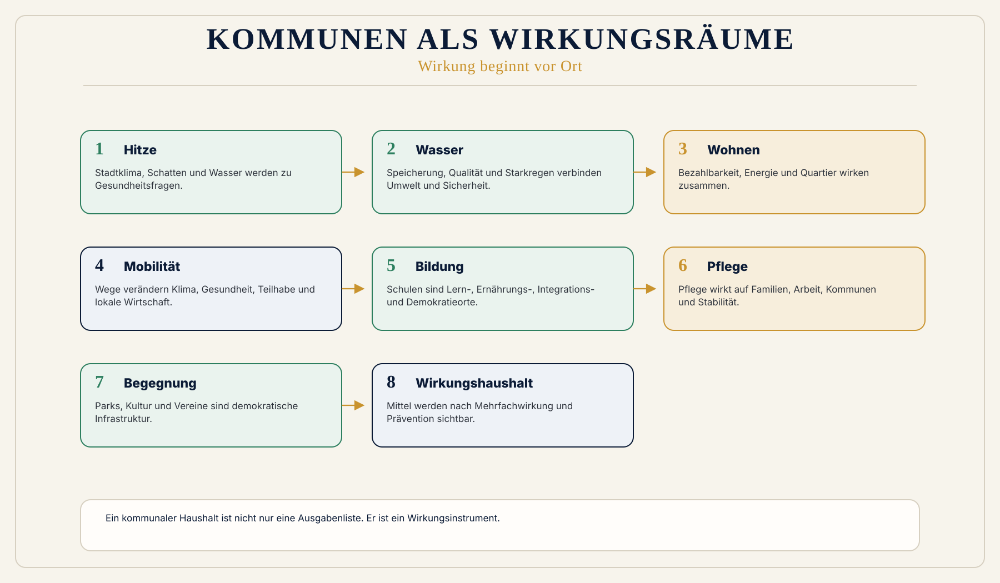

Silo-Steuerung
Kommunale Steuerung arbeitet häufig in Silos: Bau, Soziales, Umwelt, Mobilität, Gesundheit, Bildung, Sicherheit.
 Wirkungsökonomie
Wirkungsökonomie
Für wen · Kommunen
Wirkung beginnt vor Ort.
Kommunen spüren, was abstrakte Politik und Märkte erzeugen: Wohnungsdruck, Hitze, Wasserstress, Pflegeengpässe, Schulwege, Einsamkeit, Mobilität, Energie, Integration, Vereinsleben, Jugendräume, Kultur, Sicherheit und Vertrauen.
Die Wirkungsökonomie macht diese Zusammenhänge steuerbar.
Ein kommunaler Haushalt ist nicht nur eine Ausgabenliste. Er ist ein Wirkungsinstrument.
Was der Kommunale Wirkungsindex zeigt, wo Datenlücken bleiben und wer verantwortlich entscheidet.
Der KWI1.0 schaut einfach nüchtern auf die drei Dimensionen Mensch, Planet und Demokratie.
Der basiert auf dem offenen Wirtschafts- und Gesellschaftsmodell von Natalie Weber.
Also keine Rangliste. Richtig. Es gibt keine Städterangliste, keine amtlichen Schulnoten und schon gar keine Wahlempfehlungen für irgendwelche Parteien.
Wobei, warte mal, zu dem Bereich Demokratie steht in den Quellen, dass das aktuell noch ein unvollständiger Konzeptbereich ist.
Der KWI1.0 liefert uns eigentlich nur einen Blick auf aktuelle Zustände, auf Trends, auf Zielabstände und… Auf die Datenqualität, oder? Genau, die Datenqualität ist entscheidend.
Wenn sich ein Wert verbessert, ist das kein Kausalitätsnachweis.
Für dich als Bürger ist es ein super Werkzeug, um politische Prioritäten zu hinterfragen. Und Journalisten können Behauptungen aus dem Rathaus besser prüfen. Für die Wissenschaft bietet es ein erprobbares Modell. Und Verwaltung und Politik finden darin fundierte Ansätze.
Wobei die Letztverantwortung immer bei den gewählten Gremien bleibt.
Die Grundlage dafür bleiben ja auch die bestehenden kommunalen Nachhaltigkeitshaushalte.
Das erste ist die Nichtkompensation. Harte Grenzen dürfen nicht durch gute Taten woanders ausgeglichen werden.
Und das zweite Prinzip ist die Reverse Merit Order. Das dient als Begrenzung der Gesamtbewertung in ganz klar definierten kritischen Feldern.
Die Quellen erwähnen ja auch KWI2.0 und3.0. Genau. Das sind aber aktuell reine Entwicklungsvorschläge.
Grundlage: veröffentlichte Texte von Natalie Weber. Mara und Jonas sind die synthetischen Stimmen dieses Website-Formats. Mara: weibliche Stimme; Jonas: männliche Stimme. Eigenständiges Format neben dem persönlichen Podcast.
Fassung: 19. Oktober 2026.
Kurz erklärt
Das Video zeigt, warum Wirkung vor Ort entsteht: in Straßen, Schulen, Kitas, Quartieren, Parks, Vereinen und Verwaltungen. Die Wirkungsökonomie hilft Kommunen, Ressortsilos aufzubrechen, Mehrfachwirkung sichtbar zu machen und knappe Mittel nach Prävention, Resilienz und Wirkung zu priorisieren.
Warum diese Perspektive wichtig ist
Kommunen müssen immer mehr Folgen reparieren, die sie nicht allein verursacht haben.
Falsche Preislogik, Wohnspekulation, Klimafolgen, soziale Spaltung, Pflegekrisen, Verkehrsprobleme und digitale Abhängigkeiten landen am Ende im Rathaus, in Schulen, Kliniken, Vereinen, Stadtwerken, Bauämtern und Sozialdiensten.
Was heute falsch läuft
Kommunale Steuerung arbeitet häufig in Silos: Bau, Soziales, Umwelt, Mobilität, Gesundheit, Bildung, Sicherheit.
Ein Stadtbaum wirkt auf Hitze, Wasser, Gesundheit, Aufenthaltsqualität, Begegnung und Quartiersstabilität.
Eine Schule wirkt auf Bildung, Ernährung, Gesundheit, Integration, Eltern, Mobilität und Demokratie.
Warum Reparatur nicht reicht
Ressortsilos und Projektförderung behandeln Hitze, Wohnen, Pflege, Mobilität, Bildung, Wasser und Beteiligung oft getrennt. Kommunale Wirkung entsteht aber im Sozialraum, nicht in Förderlogiken.
Die WÖk macht Kommunen zu lokalen Wirkungsräumen: Wirkungshaushalt, Beschaffung, Planung und Beteiligung werden zusammengeführt.
WÖk-Verschiebung
Die WÖk macht kommunale Mehrfachwirkung sichtbar. Mittel werden nicht nur nach Ressort, Titel und Pflichtaufgabe betrachtet, sondern nach Netto-Wirkung, Prävention, Resilienz und sozialer Stabilität.
Wirkungshaushalte zeigen, welche Investitionen mehrere Wirkungsräume gleichzeitig stärken.
Konkreter Gewinn
Was nicht passiert
Die WÖk macht Kommunen nicht zu Bewertungsmaschinen.
Sie ersetzt keine demokratische Kommunalpolitik.
Sie hilft, Wirkung sichtbar zu machen, Zielkonflikte zu benennen und öffentliche Mittel besser zu begründen.
Wirkungspfad
Konkretes Beispiel
Ein Park ist keine Dekoration. Er ist Hitzeschutz, Wasserspeicher, Bewegungsraum, Begegnungsraum, psychischer Entlastungsraum, Biodiversitätsfläche und demokratische Alltagsinfrastruktur.
Beta-Tool
Der KWI bündelt kommunale Daten zu Mensch, Planet und Demokratie. Er ist kein Ranking und keine Schulnote, sondern ein Wirkungscockpit: Was ist stabil, wo entstehen Risiken, und welche Daten fehlen noch?
Ausprobieren
Modellhafte Auswertung mit vorbereiteten kommunalen Snapshots, MPD-Statuslinie, Zielpfad und Interpretation.
Konzept
Konzeptseite zu Datenquellen, SDG+/Demokratie-Dimension, Zielpfad und Schutzlinien.
Dossier
Öffentliche WÖk-Fassung mit Online-Volltext, PDF.
Visual
Stadtplanartige WÖk-Karte mit Knoten: Wohnen, Schule, Pflege, Park, Mobilität, Wasser, Energie, Kultur, Beteiligung. Linien zeigen Mehrfachwirkung.

Vertiefung
Die nächste Frage lautet nicht, wie diese Zielgruppe nachhaltiger wird. Sie lautet: Welche alte Steuerungslogik erzeugt das Problem, und wie verändert Wirkung die Logik selbst?
Quellenbasis / Einordnung